F I Ş A Nr. 6
Crearea tabelelor şi inserarea înregistrărilor cu SQL.
SQL vine de la Structured Query Language și este un limbaj de programare standardizat care este utilizat pentru a gestiona baze de date relaționale și pentru a efectua diverse operații asupra datelor. Bazele limbajului de programare SQL s-au pus în anii 1970, fiind creat în urma lucrărilor lui Edgar F. Codd.
1. Crearea unui tabel utilizând SQL.
Pentru a creea un tabel utilizând SQL :
- Creaţi o bază de date goală cu Access(fără tabele):
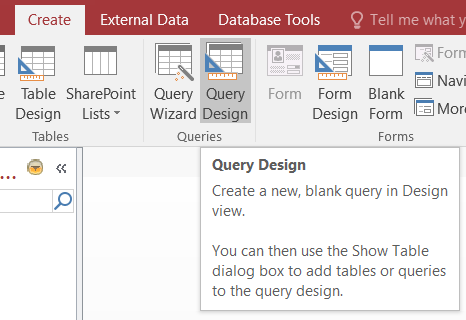
- Pe fila Creare(Create), în grupul Interogări(Queries), faceți clic pe Proiectare interogare(Query Design):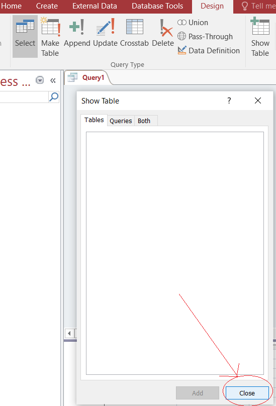
- In fereastra care apare faceți clic pe CLOSE;
- Faceți clic pe "SQL View":
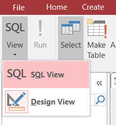;
- In fereastra care apare scrieți următoarea instrucțiune SQL pentru crearea tabelului "Elev";
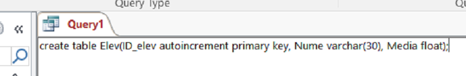
- Pentru a creea tabelul "Elev" faceți clic pe "RUN":
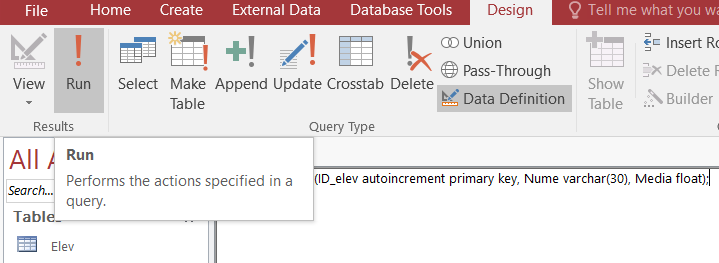;
- Se obţine un tabel gol(fără înregistrări):
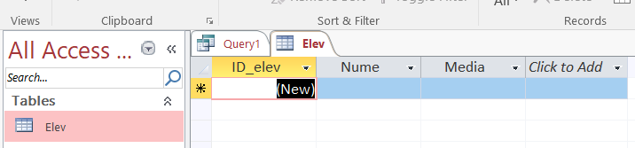
2. Inserarea înregistrărilor în tabel utilizând SQL.
Pentru inserarea înregistrărilor în tabel se parcurg următorii paşi:
- Scrieți următoarea instrucțiune SQL pentru inserarea unei înregistrări în tabelul "Elev":
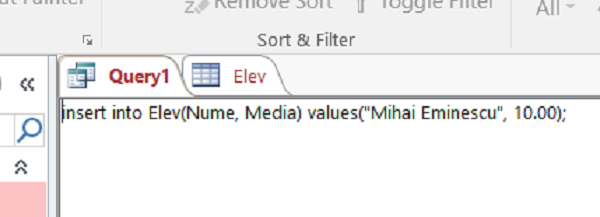
- Pentru inserarea înregistrării în tabelul "Elev" faceți clic pe "RUN":
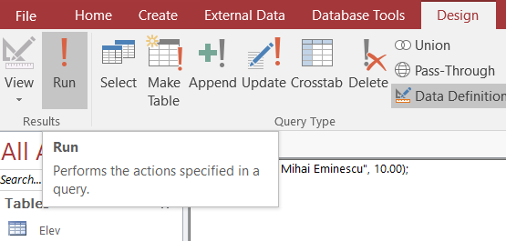;
- Se obţine un tabel care conține o înregistrare:
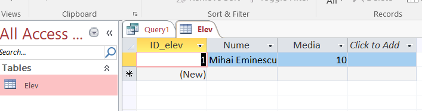
- Pentru inserarea unei noi înregistrări scrieți o nouă instrucțiune SQL.
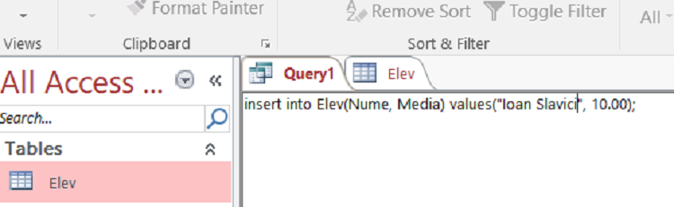
- Pentru inserarea înregistrării în tabelul "Elev" faceți clic pe "RUN" şi inchideți tabelul:
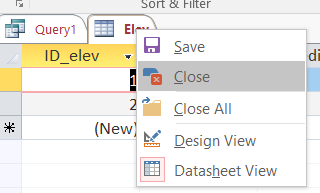
-
Se obţine un tabel care conține două înregistrari:
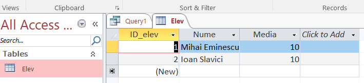